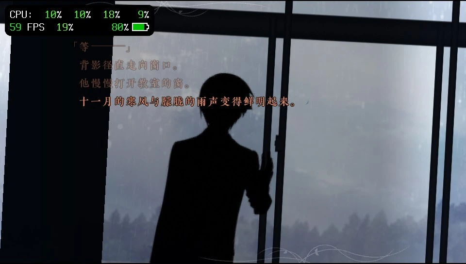
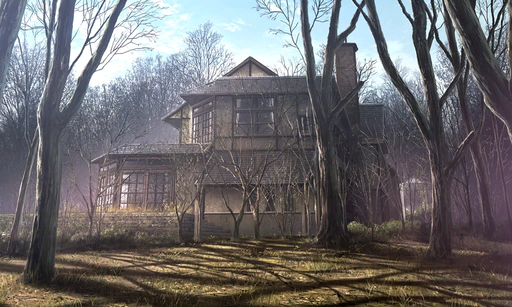
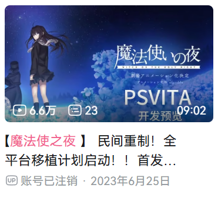
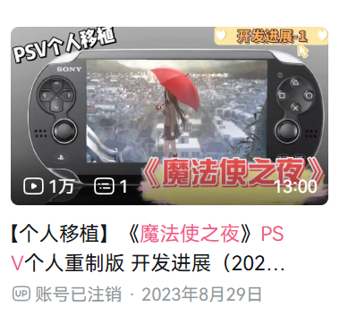
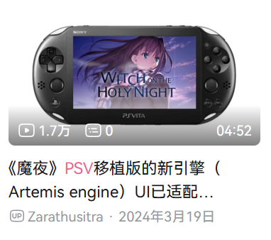
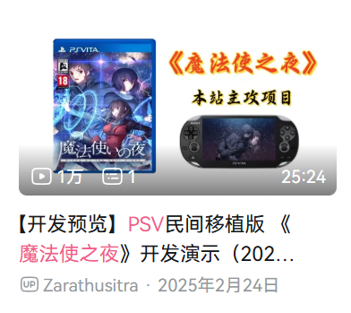
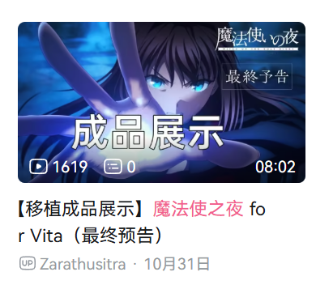

01
为这台掌机而生
原生 GXM 图形后端，配合离线专用着色器与按材质选路，让每一份图形算力用在演出上。
NATIVE GXM RENDERING有些故事，值得随身携带。
WITCH ON THE HOLY NIGHT
将那个魔法之夜，带回掌心。
一场为 PS Vita 重新启程的视觉小说之旅。
洋馆的灯火、冬日的街道，还有那个不曾忘记的夜晚。现在，合上电脑，让故事跟着你出发。
基于开源 knife 引擎，为 PS Vita 打造原生 GXM 渲染与掌机适配。在小小的屏幕上，认真留住每一幕演出的光影与温度。
了解这个开源移植

原生 GXM 图形后端，配合离线专用着色器与按材质选路，让每一份图形算力用在演出上。
NATIVE GXM RENDERING960 × 540 演出画布，适配 Vita 屏幕。保留场景构图与中文阅读体验，让故事触手可及。
540P VISUAL EXPERIENCE从纹理管理到声音缓冲，从实机反馈到体验打磨。开源迭代，让这段旅程走得更远。
BUILT WITH CARE
日常的尽头，
是魔法开始的地方。
标题、对白、书库与设置。看看它在 PS Vita 上的模样。
以上为历史实机截图。演出性能随场景而变化，截图中的帧率不代表全游戏或最新版本的性能。
从 2023 年 6 月到 2026 年 11 月。一次次预览、演示与打磨，
把「在 Vita 上读到这个故事」的想法，一点点变成现实。
—
最初的开发预览公开。「民间重制」「全平台移植计划启动」——一段漫长旅程的起点，留在了这张视频记录里。
首发预览 · 09:02
查看完整记录 ↗PSV 个人重制版发布开发进展展示。熟悉的雨景出现在掌机画面里，最初的计划有了可以向大家展示的模样。
个人移植进展 · 13:00
查看完整记录 ↗开发记录走到 Artemis engine 的 UI 适配阶段。为掌机寻找合适的实现方式，也是这段移植历程的一部分。
Artemis 引擎 / UI 适配 · 04:52
查看完整记录 ↗新的开发预览带来一段 25 分钟的演示。这项持续推进的民间移植，再一次向关注它的人展示进展。
PSV 民间移植开发演示 · 25:24
查看完整记录 ↗「魔法使之夜 for Vita（最终预告）」留下了成品展示的记录。从最初预览到这一刻，项目已走过许多次尝试与迭代。
Zarathustra · 08:02原截图显示 10 月 31 日，未标注年份。
查看完整记录 ↗五张历史视频截图由项目维护者提供。点击可查看完整截图；以上为开发阶段记录，不代表当前版本的技术路线或性能。
准备你的设备与原版资源，跟随项目文档开始。
一台可运行自制程序的 PS Vita，以及足够存放游戏资源的存储空间。
使用自己持有的 Switch 本体、对应更新与汉化资源，按文档转换为 Vita 配套素材。
阅读资源文档按项目说明获取或构建 VPK，安装程序，再复制与程序版本匹配的 assets。
查看安装说明这是由爱好者开发的非官方开源移植项目，基于 AuroraWright/knife 引擎。与 TYPE-MOON、Sony 及原作发行方无隶属关系。
不包含。源码仓库和 VPK 提供引擎与程序，游戏本体、字体、音视频及汉化资源需要自行准备。程序需要匹配版本的转换资源包。
不能保证。实际帧率受到演出复杂度、图层与特效负载影响。项目持续优化重场景，最新状态与已知限制请以仓库文档和对应版本实机记录为准。
欢迎通过 GitHub Issues 反馈。附上程序版本、场景、复现步骤与日志，有助于定位问题。也欢迎参与代码、文档和实机测试。
献给仍然热爱 PS Vita，也热爱这个故事的你。
前往项目仓库MOFA / VITA